1060E42 PRESSURE PUMP SUPPORT - DISMANTLING AND REASSEMBLY AT THE BENCH
- Path
- Procedures > 10 ENGINE > 1060 DIESEL INJECTION SYSTEM > 1060E DIESEL PRESSURE PUMP AND CONTROL > 1060E42 PRESSURE PUMP SUPPORT - DISMANTLING AND REASSEMBLY AT THE BENCH
- Kind
- repair procedure (removal / refitting; the operation number is the code)
- Applies to
- engines: 1.9 JTD 8V, 1.9 JTD 16V, 2.4 JTD 20V; all production periods
- Interactive page
- https://sloeber94.github.io/elrnDB/#/939010553
Applies to: engines: 2.4 JTD 20V; all production periods
 Removing
Removing
 Refitting
RefittingPosition the pressure pump support in a vice fitted with protective jaws.
1. Lock the rotation of the pressure pump drive pulley using two bolts.
2. Undo the pressure pump drive pulley nut.
Undo the two bolts for locking the rotation of the pressure pump drive pulley fitted previously.
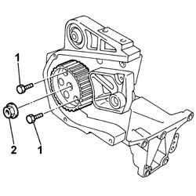
Applies to: engines: 2.4 JTD 20V; all production periods
1. Remove the pressure pump drive pulley (1a) using the tools (1b).
Description | Code | Function | |
|---|---|---|---|
1b | Extractor | 1.860.854.001 | Pressure pump control pulley removal |
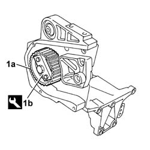
Applies to: engines: 2.4 JTD 20V; all production periods
1. Undo the nuts (1a) and remove the pressure pump (1b) from the support.
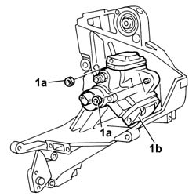
Applies to: engines: 2.4 JTD 20V; all production periods
Refitting
Removing1. Place the pressure pump (1a) on the support and secure it tightening the nuts (1b) to the recommended torque.
Value daNm | Fastening | Component | Ø | |
|---|---|---|---|---|
1b | 2.3 ÷ 3.3 | Nut | INJECTION PRESSURE PUMP MOUNT | M8 |
Applies to: engines: 2.4 JTD 20V; all production periods
Place the pressure pump drive pulley back in its housing.
1. Lock the rotation of the pressure pump drive pulley using two bolts.
2. Tighten the nut fixing the pressure pump drive pulley to the recommended torque.
Value daNm | Fastening | Component | Ø | |
|---|---|---|---|---|
. | 4.2 ÷ 6.6 | Nut | PRESSURE PUMP CONTROL PULLEY | M14 |
Undo the two bolts for locking the rotation of the pressure pump drive pulley fitted previously.
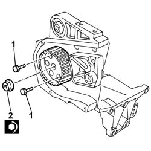
Applies to: engines: 1.9 JTD 16V; all production periods
Removing
RefittingPosition the pressure pump support in a vice fitted with protective jaws.
1. Lock the rotation of the pressure pump drive pulley using two bolts.
2. Undo the pressure pump drive pulley nut.
Undo the two bolts for locking the rotation of the pressure pump drive pulley fitted previously.
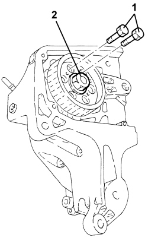
Applies to: engines: 1.9 JTD 16V; all production periods
1. Remove the pressure pump drive pulley (1a) using the tool (1b).
Tool | Description | Function | Validity |
|---|---|---|---|
1860854001 | Extractor | Pressure pump control pulley removal | 1.9 JTD 8V 1.9 JTD 16V |
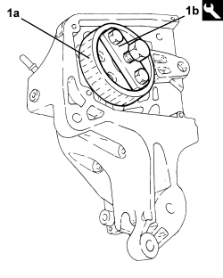
Applies to: engines: 1.9 JTD 16V; all production periods
1. Undo the nuts (1a) and remove the pressure pump (1b) from the support.
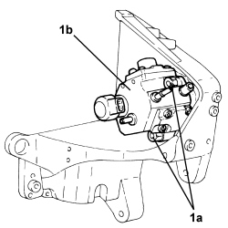
Applies to: engines: 1.9 JTD 16V; all production periods
Refitting
Removing1. Place the pressure pump (1a) on the support and secure it tightening the nuts (1b) to the recommended torque.
Component | Fastening | dia | Value (daNm) | Validity |
|---|---|---|---|---|
Pressure pump | Nut | M8 | (support side) 2.3 - 2.8 | 1.9 JTD 16v 1.9 JTD 8v |
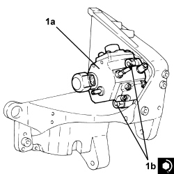
Applies to: engines: 1.9 JTD 16V; all production periods
1. Place the pressure pump drive pulley back in its housing.
2. Lock the rotation of the pressure pump drive pulley using two bolts.
3. Tighten the nut fixing the pressure pump drive pulley to the recommended torque.
Component | Fastening | dia | Value (daNm) | Validity |
|---|---|---|---|---|
Pressure pump drive pulley | Nut | M14 | (pressure pump side) 4.5 - 5.5 | 1.9 JTD 16v 1.9 JTD 8v |
Undo the two bolts for locking the rotation of the pressure pump drive pulley fitted previously.
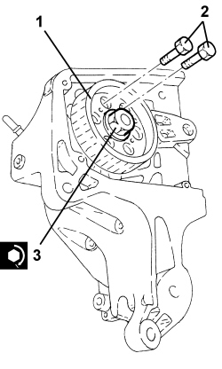
Applies to: engines: 1.9 JTD 8V; all production periods
Removing
RefittingPosition the pressure pump support in a vice fitted with protective jaws.
1. Lock the rotation of the pressure pump drive pulley using two bolts.
2. Undo bolts (2a) and remove safety flange (2b).
3. Undo the pressure pump drive pulley nut.
Undo the two bolts for locking the rotation of the pressure pump drive pulley fitted previously.
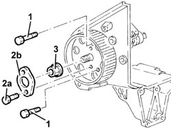
Applies to: engines: 1.9 JTD 8V; all production periods
1. Remove pressure pump drive pulley (1a) using tool (1b).
Tool | Description | Function | Validity |
|---|---|---|---|
1860954002 | Extractor | Pressure pump control pulley removal | 1.9 JTD 8V 1.9 JTD 16V 2.4 JTD 20V |
2. Undo nuts (2a) and remove pressure pump (2b) from support (2c).
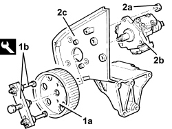
Applies to: engines: 1.9 JTD 8V; all production periods
Refitting
RemovingFit the pressure pump on the support and fasten it using the nuts.
Fit the pressure pump drive pulley.
Lock the rotation of the pressure pump drive pulley using two bolts.
Tighten the nut fixing the pressure pump drive pulley to the recommended torque.
Component | Fastening | dia | Value (daNm) | Validity |
|---|---|---|---|---|
Pressure pump drive pulley | Nut | M14 | 4.5 ÷ 5.5 | 1.9 Multijet |
Fit the safety flange tightening the fixing bolts.